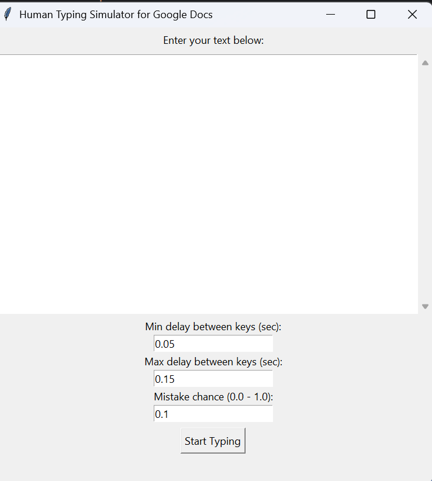

Human Typing Simulator
>> A Python GUI application that simulates human typing behavior with customizable speed, mistake rates, and pauses. Perfect for creating realistic typing demonstrations in Google Docs or any text editor.

Project Overview
The Human Typing Simulator is designed to mimic realistic human typing patterns rather than perfect robotic typing. It includes features like:
Variable Typing Speed
Adjustable min/max delay between keystrokes to simulate natural typing rhythm
Realistic Mistakes
Configurable mistake probability with automatic correction to mimic human errors
Thinking Pauses
Random pauses during typing to simulate thinking or hesitation moments
Customizable Settings
Easy-to-use GUI for adjusting all parameters without modifying code
How It Works
The application uses PyAutoGUI to simulate keyboard input while applying various human-like behaviors:
- Random delays between keystrokes within user-defined ranges
- Occasional typos that are immediately corrected (backspace + correct key)
- Natural pauses during typing to mimic thinking or hesitation
- 5-second countdown before starting to allow users to switch to target application
Technical Implementation
The core functionality is built around Python's Tkinter for the GUI and PyAutoGUI for automation:
def start_typing():
text = text_box.get("1.0", tk.END).strip()
if not text:
return
delay_min = float(min_delay.get())
delay_max = float(max_delay.get())
mistake_chance = float(mistake_rate.get())
pause_chance = float(pause_rate.get())
pause_time = float(pause_length.get())
info_label.config(text="Switch to Google Doc. Typing will start in 5 seconds...")
window.update()
time.sleep(5)
for char in text:
# Chance to pause (like thinking moment)
if random.random() < pause_chance and char not in [" ", "\n"]:
time.sleep(pause_time)
# Only make mistakes on letters, mistakes are lowercase only
if char.isalpha() and random.random() < mistake_chance:
wrong_char = random.choice(string.ascii_lowercase)
pyautogui.typewrite(wrong_char)
time.sleep(random.uniform(delay_min, delay_max))
pyautogui.typewrite(["backspace"])
time.sleep(random.uniform(delay_min, delay_max))
pyautogui.typewrite(char)
time.sleep(random.uniform(delay_min, delay_max))
info_label.config(text="Done!")Key Features
- Customizable Speed: Set minimum and maximum delay between keystrokes
- Mistake Simulation: Adjustable probability of making typos (0-100%)
- Natural Pauses: Configurable chance and duration of thinking pauses
- Text Input: Large text area for pasting or typing content
- User-Friendly Interface: Clean Tkinter GUI with intuitive controls
- Cross-Platform: Works on Windows, macOS, and Linux
Use Cases
- Creating realistic typing demonstration videos
- Testing text input fields in applications
- Automating data entry with human-like patterns
- Educational purposes for typing tutorials
- Performance testing of text editors